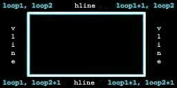

|
第21課 |
 |
 |
線，反走樣，計時，正投影和簡單的聲音:
這是我第一個大的教程，它將包括線，反走樣，計時，正投影和簡單的聲音。希望這一課中的東西能讓每個人感到高興。 |
|
 |
 |
歡迎來到第21課，在這一課裡，你將學會直線，反走樣，正投影，計時，基本的音效和一個簡單的遊戲邏輯。希望這裡的東西可以讓你高興。我花了兩天的時間寫代碼，並用了兩周的時間寫這份HTML文件，希望你能享受我的勞動。
在這課的結尾你將獲得一個叫"amidar"的遊戲，你的任務是走完所有的直線。這個程序有了一個基本遊戲的一切要素，關卡，生命值，聲音和一個遊戲道具。
我們從第一課的程序來逐步完整這個程序，按照慣例，我們只介紹改動的部分。 |  |
#include <windows.h>
#include <stdio.h>
#include <stdarg.h>
#include <gl\gl.h>
#include <gl\glu.h>
#include <gl\glaux.h>
HDC hDC=NULL;
HGLRC hRC=NULL;
HWND hWnd=NULL;
HINSTANCE hInstance;
|
bool類型的變量，vline保存了組成我們遊戲網格垂直方向上的121條線，上下水平各11條。hline保存了水平方向上的
121條線，用ap來檢查A鍵是否已經按下。
當網格被填滿時， filled被設置為TRUE而反之則為FALSE。gameover這個變量的作用顯而易見，當他的值為TRUE時，遊戲結束。anti指出抗鋸齒功能是否打開，當設置為TRUE時，該功能是打開著的。active
和 fullscreen 指出窗口是否被最小化以及遊戲窗口是窗口模式還是全屏模式。 | |
bool keys[256];
bool vline[11][10]; // 保存垂直方向的11根線條中，每根線條中的10段是否被走過
bool hline[10][11]; //保存水平方向的11根線條中，每根線條中的10段是否被走過
bool ap; // A鍵是否已經按下
bool filled; // 網格是否被填滿?
bool gameover; // 遊戲是否結束?
bool anti=TRUE; // 是否啟用反走樣?
bool active=TRUE;
bool fullscreen=TRUE;
|
接著設置整型變量。loop1 和 loop2 被用來檢查網格，查看是否有敵人攻擊我們，以及在網格上給對像一個隨機的位置。你將看到loop1
/ loop2在後面的程序得到使用。delay 是一個計數器，我用他來減慢那些壞蛋的動作。當delay的值大於某一個饋值的時候，敵人才可以行動，此時delay將被重置。
adjust是一個非常特殊的變量，即使我們的程序擁有一個定時器，他也僅僅用來檢查你的計算機是否運行地太快。如果是，則需要暫停一下以減慢運行速度。在我地GeForce顯卡上，程序的運行平滑地簡直變態，並且非常非常快。但是在我的PIII/450＋Voodoo
3500TV上測試的時候，我注意到程序運行地非常緩慢。我發現問題在於關於時間控制那部分代碼只能夠用來減慢遊戲進行而並不能加速之。因此我引入了一個叫做adjust
的變量。它可以是0到5之間的任何值。遊戲中的對象移動速度的不同依賴於這個變量的值。值越小，運動越平滑；而值越大，則運動速度越快。這是在比較慢的機器上運行這個程序最簡單有效的解決方案了。但是請注意，不管對像移動的速度有多快，遊戲的速度都不會比我期望的更快。我們推薦把adjust值設置為3，這樣在大部分機器上都有比較滿意的效果。
我們把lives的值設置成5，這樣我們的英雄一出場就擁有5條命。level是一個內部變量，用來指出當前遊戲的難度。當然，這並不是你在屏幕上所看到的那個Level。變量level2開始的時候和Level擁有相同的值，但是隨著你技能的提高，這個值也會增加。當你成功通過難度3之後，這個值也將在難度3上停止增加。level
是一個用來表示遊戲難度的內部變量，stage才是用來記錄當前遊戲關卡的變量。 |
|
int loop1; // 通用循環變量
int loop2; // 通用循環變量
int delay; // 敵人的暫停時間
int adjust=3; // 調整顯示的速度
int lives=5; // 玩家的生命
int level=1; // 內部遊戲的等級
int level2=level; // 顯示的遊戲的等級
int stage=1; // 遊戲的關卡
|
接下來我們需要一個結構來記錄遊戲中的對象。fx和fy每次在網格上移動我們的英雄和敵人一些較小的象素，以創建一個平滑的動畫效果。x和y則記錄著對像處於網格的那個交點上。
上下左右各有11個點，因此x和y可以是0到10之間的任意值。這也是我們為什麼需要fx和fy的原因。考慮如果我們只能夠在上下和左右方向的11個點間移動的話，我們的英雄不得不
在各個點間跳躍前進。這樣顯然是不夠平滑美觀的。
最後一個變量spin用來使對像在Z軸上旋轉。 |
|
struct object // 記錄遊戲中的對象
{
int fx, fy; // 使移動變得平滑
int x, y; // 當前遊戲者的位置
float spin; // 旋轉方向
};
|
既然我們已經為我們的玩家，敵人，甚至是秘密武器。設置了結構體，那麼同樣的，為了表現剛剛創設的結構體的功能和特性，我們也可以為此設置新的結構體。
為我們的玩家創設結構體之下的第一條直線。基本上我們將會為玩家提供fx，fy，x，y和spin值幾種不同的結構體。通過增加這些直線，僅需查看玩家的x值我們就很容易取得玩家的位置，同時我們也可以通過增加玩家的旋轉度來改變玩家的spin值。
第二條直線略有不同。因為同一屏幕我們可以同時擁有至多15個敵人。我們需要為每個敵人創造上面所提到的可變量。我們通過設置一個有15個敵人的組來實現這個目標，如第一個敵人的位置被設定為敵人（0）.x.第二個敵人的位置為（1），x等等
第三條直線使得為寶物創設結構體實現了可能。寶物是一個會時不時在屏幕上出現的沙漏。我們需要通過沙漏來追蹤x和y值。但是因為沙漏的位置是固定的所以我們不需要尋找最佳位置，而通過為程序後面的其他物品尋找好的可變量來實現（如fx和fy） |
|
struct object player; // 玩家信息
struct object enemy[9]; // 最多9個敵人的信息
struct object hourglass; // 寶物信息
|
現在我們創建一個描述時間的結構，使用這個結構我們可以很輕鬆的跟蹤時間變量。
接下來的第一步，就是創建一個64位的頻率變量，它記錄時間的頻率。
resolution變量用來記錄最小的時間間隔。
mm_timer_start和mm_timer_elapsed保存計時器開始時的時間和計時器開始後流失的時間。這兩個變量只有當計算機不擁有performance
counter時才啟用。
變量performance_timer用來標識計算機是否有performance counter
如果performance counter啟用，最後兩個變量用來保存計時器開始時的時間和計時器開始後流失的時間，它們比普通的根據精確。 | |
struct // 保存時間信息的結構
{
__int64 frequency; // 頻率
float resolution; // 時間間隔
unsigned long mm_timer_start; // 多媒體計時器的開始時間
unsigned long mm_timer_elapsed; // 多媒體計時器的開始時間
bool performance_timer; // 使用Performance Timer?
__int64 performance_timer_start; // Performance Timer計時器的開始時間
__int64 performance_timer_elapsed; // Performance Timer計時器的開始時間
} timer;
|
下一行代碼定義了速度表。如前所說，對像移動的速度依賴於值adjust，而以adjust為下標去檢索速度表，就可以獲得對象的移動速度。 |
|
int steps[6]={ 1, 2, 4, 5, 10, 20 }; // 用來調整顯示的速度
|
接下來我們將為紋理分配空間。紋理一共2張，一張是背景而另外一張是一張字體紋理。如本系列教程中的其他課程一樣，base用來指出字符顯示列表的基，同樣的我們在最後聲明了窗口過程WndProc()。 |
|
GLuint texture[2]; // 字符紋理
GLuint base; // 字符顯示列表的開始值
LRESULT CALLBACK WndProc(HWND, UINT, WPARAM, LPARAM);
|
接下來會是很有趣的工作。接下來的一段代碼會初始化我們的計時器。代碼會檢查performance
counter(非常精確的計數器)是否可用，如果不可用，則使用多媒體計時器。這段代碼是可以移植的。 |
|
void TimerInit(void) // 初始化我們的計時器
{
memset(&timer, 0, sizeof(timer)); // 清空計時器結構
// 檢測Performance Counter是否可用，可用則創建
if (!QueryPerformanceFrequency((LARGE_INTEGER *) &timer.frequency))
{
// 如果不可用
timer.performance_timer = FALSE; // 設置Performance Timer為false
timer.mm_timer_start = timeGetTime(); // 使用普通的計時器
timer.resolution = 1.0f/1000.0f; // 設置單位為毫秒
timer.frequency = 1000; // 設置頻率為1000
timer.mm_timer_elapsed = timer.mm_timer_start; // 設置流失的時間為當前的時間
}
|
如果performance counter 可用，則執行下面的代碼： |
|
else
{
// 使用Performance Counter計時器
QueryPerformanceCounter((LARGE_INTEGER *) &timer.performance_timer_start);
timer.performance_timer = TRUE; // 設置Performance Timer為TRUE
// 計算計時的精確度
timer.resolution = (float) (((double)1.0f)/((double)timer.frequency));
// 設置流失的時間為當前的時間
timer.performance_timer_elapsed = timer.performance_timer_start;
}
}
|
上面的代碼設置了計時器，而下面的代碼則讀出計時器並返回已經經過的時間，以毫秒計。代碼很簡單，首先檢查是否支持performance
counter，若支持，則調用其相關函數；否則調用多媒體函數。 |
|
float TimerGetTime() // 返回經過的時間，以毫秒為單位
{
__int64 time; // 使用64位的整數
if (timer.performance_timer) // 是否使用Performance Timer計時器?
{
QueryPerformanceCounter((LARGE_INTEGER *) &time); // 返回當前的時間
// 返回時間差
return ( (float) ( time - timer.performance_timer_start) * timer.resolution)*1000.0f;
}
else
{
// 使用普通的計時器，返回時間差
return( (float) ( timeGetTime() - timer.mm_timer_start) * timer.resolution)*1000.0f;
}
}
|
在下面的代碼裡，我們把玩家重置在屏幕的左上角，而給敵人設置一個隨機的位置。 |
|
void ResetObjects(void) // 重置玩家和敵人
{
player.x=0; // 把玩家置於左上角
player.y=0;
player.fx=0;
player.fy=0;
|
接著我們給敵人一個隨機的開始位置，敵人的數量等於難度乘上當前關卡號。記著，難度最大是3，而最多有3關。因此敵人最多有9個。 |
|
for (loop1=0; loop1<(stage*level); loop1++) // 循環隨即放置所有的敵人
{
enemy[loop1].x=5+rand()%6;
enemy[loop1].y=rand()%11;
enemy[loop1].fx=enemy[loop1].x*60;
enemy[loop1].fy=enemy[loop1].y*40;
}
}
|
並沒有做任何改動，因此我將跳過它。在LoadGLTextures函數里我將載入那兩個紋理－－背景和字體。並且我會把這兩副圖都轉化成紋理，這樣我們就可以在遊戲中使用他們。紋理創建好之後，像素數據就可以刪除了。沒有什麼新東西，你可以閱讀以前的課程以獲得更多信息。
| |
int LoadGLTextures()
{
int Status=FALSE;
AUX_RGBImageRec *TextureImage[2];
memset(TextureImage,0,sizeof(void *)*2);
if ((TextureImage[0]=LoadBMP("Data/Font.bmp")) && // 載入字體紋理
(TextureImage[1]=LoadBMP("Data/Image.bmp"))) // 載入圖像紋理
{
Status=TRUE;
glGenTextures(2, &texture[0]);
for (loop1=0; loop1<2; loop1++)
{
glBindTexture(GL_TEXTURE_2D, texture[loop1]);
glTexImage2D(GL_TEXTURE_2D, 0, 3, TextureImage[loop1]->sizeX, TextureImage[loop1]->sizeY,
0, GL_RGB, GL_UNSIGNED_BYTE, TextureImage[loop1]->data);
glTexParameteri(GL_TEXTURE_2D,GL_TEXTURE_MIN_FILTER,GL_LINEAR);
glTexParameteri(GL_TEXTURE_2D,GL_TEXTURE_MAG_FILTER,GL_LINEAR);
}
for (loop1=0; loop1<2; loop1++)
{
if (TextureImage[loop1])
{
if (TextureImage[loop1]->data)
{
free(TextureImage[loop1]->data);
}
free(TextureImage[loop1]);
}
}
}
return Status;
}
|
下面的代碼建立了顯示列表。對於字體的顯示，我已經寫過教程。在這裡我把字體圖像分成16×16個單元共256個字符。如果你有什麼不明白，請參閱前面的教程 |
|
GLvoid BuildFont(GLvoid)
{
base=glGenLists(256);
glBindTexture(GL_TEXTURE_2D, texture[0]);
for (loop1=0; loop1<256; loop1++)
{
float cx=float(loop1%16)/16.0f;
float cy=float(loop1/16)/16.0f;
glNewList(base+loop1,GL_COMPILE);
glBegin(GL_QUADS);
glTexCoord2f(cx,1.0f-cy-0.0625f);
glVertex2d(0,16);
glTexCoord2f(cx+0.0625f,1.0f-cy-0.0625f);
glVertex2i(16,16);
glTexCoord2f(cx+0.0625f,1.0f-cy);
glVertex2i(16,0);
glTexCoord2f(cx,1.0f-cy);
glVertex2i(0,0);
glEnd();
glTranslated(15,0,0);
glEndList();
}
}
|
當我們不再需要顯示列表的時候，銷毀它是一個好主意。在這裡我仍然把代碼加上了，雖然沒有什麼新東西。 |
|
GLvoid KillFont(GLvoid)
{
glDeleteLists(base,256);
}
|
函數沒有做太多改變。唯一的改動是它可以打印變量了。我把代碼列出這樣你可以容易看到改動的地方。
請注意，在這裡我激活了紋理並且重置了視圖矩陣。如果set被置1的話，字體將被放大。我這樣做是希望可以在屏幕上顯示大一點的字符。在一切結束後，我會禁用紋理。 |
|
GLvoid glPrint(GLint x, GLint y, int set, const char *fmt, ...)
{
char text[256];
va_list ap;
if (fmt == NULL)
return;
va_start(ap, fmt);
vsprintf(text, fmt, ap);
va_end(ap);
if (set>1)
{
set=1;
}
glEnable(GL_TEXTURE_2D);
glLoadIdentity();
glTranslated(x,y,0);
glListBase(base-32+(128*set));
if (set==0)
{
glScalef(1.5f,2.0f,1.0f);
}
glCallLists(strlen(text),GL_UNSIGNED_BYTE, text);
glDisable(GL_TEXTURE_2D);
}
|
下面的代碼基本沒有變化，只是把透視投影變為了正投影 |
|
GLvoid ReSizeGLScene(GLsizei width, GLsizei height)
{
if (height==0)
{
height=1;
}
glViewport(0,0,width,height);
glMatrixMode(GL_PROJECTION);
glLoadIdentity();
glOrtho(0.0f,width,height,0.0f,-1.0f,1.0f);
glMatrixMode(GL_MODELVIEW);
glLoadIdentity();
}
|
初始化的代碼和前面的代碼相比沒有什麼改變 |
|
int InitGL(GLvoid)
{
if (!LoadGLTextures())
{
return FALSE;
}
BuildFont();
glShadeModel(GL_SMOOTH);
glClearColor(0.0f, 0.0f, 0.0f, 0.5f);
glClearDepth(1.0f);
glHint(GL_LINE_SMOOTH_HINT, GL_NICEST);
glEnable(GL_BLEND);
glBlendFunc(GL_SRC_ALPHA, GL_ONE_MINUS_SRC_ALPHA);
return TRUE;
}
|
下面是我們的繪製代碼。
首先我們清空緩存，接著綁定字體的紋理，繪製遊戲的提示字符串 | |
int DrawGLScene(GLvoid)
{
glClear(GL_COLOR_BUFFER_BIT | GL_DEPTH_BUFFER_BIT);
glBindTexture(GL_TEXTURE_2D, texture[0]); // 選擇字符紋理
glColor3f(1.0f,0.5f,1.0f);
glPrint(207,24,0,"GRID CRAZY"); // 繪製遊戲名稱"GRID CRAZY"
glColor3f(1.0f,1.0f,0.0f);
glPrint(20,20,1,"Level:%2i",level2); // 繪製當前的級別
glPrint(20,40,1,"Stage:%2i",stage); // 繪製當前級別的關卡
|
現在我們檢測遊戲是否結束，如果遊戲結束繪製"Gmae over"並提示玩家按空格鍵重新開始 |
|
if (gameover) // 遊戲是否結束?
{
glColor3ub(rand()%255,rand()%255,rand()%255); // 隨機選擇一種顏色
glPrint(472,20,1,"GAME OVER"); // 繪製 GAME OVER 字符串到屏幕
glPrint(456,40,1,"PRESS SPACE"); // 提示玩家按空格鍵重新開始
}
|
在屏幕的右上角繪製玩家的剩餘生命 |
|
for (loop1=0; loop1<lives-1; loop1++) //循環繪製玩家的剩餘生命
{
glLoadIdentity();
glTranslatef(490+(loop1*40.0f),40.0f,0.0f); // 移動到屏幕右上角
glRotatef(-player.spin,0.0f,0.0f,1.0f); // 旋轉繪製的生命圖標
glColor3f(0.0f,1.0f,0.0f); // 繪製玩家生命
glBegin(GL_LINES); // 繪製玩家圖標
glVertex2d(-5,-5);
glVertex2d( 5, 5);
glVertex2d( 5,-5);
glVertex2d(-5, 5);
glEnd();
glRotatef(-player.spin*0.5f,0.0f,0.0f,1.0f);
glColor3f(0.0f,0.75f,0.0f);
glBegin(GL_LINES);
glVertex2d(-7, 0);
glVertex2d( 7, 0);
glVertex2d( 0,-7);
glVertex2d( 0, 7);
glEnd();
}
|
下面我們來繪製網格，我們設置變量filled為TRUE，這告訴程序填充網格。
接著我們把線的寬度設置為2，並把線的顏色設置為藍色，接著我們檢測線斷是否被走過，如果走過我們設置顏色為白色。
| |
filled=TRUE; // 在測試前，把填充變量設置為TRUE
glLineWidth(2.0f); // 設置線寬為2.0f
glDisable(GL_LINE_SMOOTH); // 禁用反走樣
glLoadIdentity();
for (loop1=0; loop1<11; loop1++) // 循環11根線
{
for (loop2=0; loop2<11; loop2++) // 循環每根線的線段
{
glColor3f(0.0f,0.5f,1.0f); // 設置線為藍色
if (hline[loop1][loop2]) // 是否走過？
{
glColor3f(1.0f,1.0f,1.0f); // 是，設線為白色
}
if (loop1<10) // 繪製水平線
{
if (!hline[loop1][loop2]) // 如果當前線段沒有走過，則不填充
{
filled=FALSE;
}
glBegin(GL_LINES); // 繪製當前的線段
glVertex2d(20+(loop1*60),70+(loop2*40));
glVertex2d(80+(loop1*60),70+(loop2*40));
glEnd();
}
|
下面的代碼繪製垂直的線段 |
|
glColor3f(0.0f,0.5f,1.0f); // 設置線為藍色
if (vline[loop1][loop2]) // 是否走過
{
glColor3f(1.0f,1.0f,1.0f); // 是，設線為白色
}
if (loop2<10) // 繪製垂直線
{
if (!vline[loop1][loop2]) // 如果當前線段沒有走過，則不填充
{
filled=FALSE;
}
glBegin(GL_LINES); // 繪製當前的線段
glVertex2d(20+(loop1*60),70+(loop2*40));
glVertex2d(20+(loop1*60),110+(loop2*40));
glEnd();
}
|
接下來我們檢測長方形的四個邊是否都被走過，如果被走過我們就繪製一個帶紋理的四邊形。 我們用下圖來解釋這個檢測過程

如果對於垂直線vline的相鄰兩個邊都被走過，並且水平線hline的相鄰兩個邊也被走過，那麼我們就可以繪製這個四邊形了。我們可以使用循環檢測每一個四邊形，代碼如下： |
|
glEnable(GL_TEXTURE_2D); // 使用紋理映射
glColor3f(1.0f,1.0f,1.0f); // 設置為白色
glBindTexture(GL_TEXTURE_2D, texture[1]); // 綁定紋理
if ((loop1<10) && (loop2<10)) // 繪製走過的四邊形
{
// 這個四邊形是否被走過?
if (hline[loop1][loop2] && hline[loop1][loop2+1] && vline[loop1][loop2] && vline[loop1+1][loop2])
{
glBegin(GL_QUADS); // 是，則繪製它
glTexCoord2f(float(loop1/10.0f)+0.1f,1.0f-(float(loop2/10.0f)));
glVertex2d(20+(loop1*60)+59,(70+loop2*40+1));
glTexCoord2f(float(loop1/10.0f),1.0f-(float(loop2/10.0f)));
glVertex2d(20+(loop1*60)+1,(70+loop2*40+1));
glTexCoord2f(float(loop1/10.0f),1.0f-(float(loop2/10.0f)+0.1f));
glVertex2d(20+(loop1*60)+1,(70+loop2*40)+39);
glTexCoord2f(float(loop1/10.0f)+0.1f,1.0f-(float(loop2/10.0f)+0.1f));
glVertex2d(20+(loop1*60)+59,(70+loop2*40)+39);
glEnd();
}
}
glDisable(GL_TEXTURE_2D);
}
}
glLineWidth(1.0f);
|
下面的代碼用來設置是否啟用直線反走樣 |
|
if (anti) // 是否啟用反走樣?
{
glEnable(GL_LINE_SMOOTH);
}
|
為了使遊戲變得簡單些，我添加了一個時間停止器，當你吃掉它時，可以讓追擊的你的敵人停下來。
下面的代碼用來繪製一個時間停止器。 | |
if (hourglass.fx==1)
{
glLoadIdentity();
glTranslatef(20.0f+(hourglass.x*60),70.0f+(hourglass.y*40),0.0f);
glRotatef(hourglass.spin,0.0f,0.0f,1.0f);
glColor3ub(rand()%255,rand()%255,rand()%255);
glBegin(GL_LINES);
glVertex2d(-5,-5);
glVertex2d( 5, 5);
glVertex2d( 5,-5);
glVertex2d(-5, 5);
glVertex2d(-5, 5);
glVertex2d( 5, 5);
glVertex2d(-5,-5);
glVertex2d( 5,-5);
glEnd();
}
|
接下來繪製我們玩家 |
|
glLoadIdentity();
glTranslatef(player.fx+20.0f,player.fy+70.0f,0.0f); // 設置玩家的位置
glRotatef(player.spin,0.0f,0.0f,1.0f); // 旋轉動畫
glColor3f(0.0f,1.0f,0.0f);
glBegin(GL_LINES);
glVertex2d(-5,-5);
glVertex2d( 5, 5);
glVertex2d( 5,-5);
glVertex2d(-5, 5);
glEnd();
|
繪製玩家的顯示效果，讓它看起來更好看些（其實沒用） |
|
glRotatef(player.spin*0.5f,0.0f,0.0f,1.0f);
glColor3f(0.0f,0.75f,0.0f);
glBegin(GL_LINES);
glVertex2d(-7, 0);
glVertex2d( 7, 0);
glVertex2d( 0,-7);
glVertex2d( 0, 7);
glEnd();
|
接下來繪製追擊玩家的敵人 |
|
for (loop1=0; loop1<(stage*level); loop1++)
{
glLoadIdentity();
glTranslatef(enemy[loop1].fx+20.0f,enemy[loop1].fy+70.0f,0.0f);
glColor3f(1.0f,0.5f,0.5f);
glBegin(GL_LINES);
glVertex2d( 0,-7);
glVertex2d(-7, 0);
glVertex2d(-7, 0);
glVertex2d( 0, 7);
glVertex2d( 0, 7);
glVertex2d( 7, 0);
glVertex2d( 7, 0);
glVertex2d( 0,-7);
glEnd();
|
下面的代碼繪製敵人的顯示效果，讓其更好看。 |
|
glRotatef(enemy[loop1].spin,0.0f,0.0f,1.0f);
glColor3f(1.0f,0.0f,0.0f);
glBegin(GL_LINES);
glVertex2d(-7,-7);
glVertex2d( 7, 7);
glVertex2d(-7, 7);
glVertex2d( 7,-7);
glEnd();
}
return TRUE;
}
|
KillGLWindow函數基本沒有變化，只在最後一行添加KillFont函數 |
|
GLvoid KillGLWindow(GLvoid)
{
if (fullscreen)
{
ChangeDisplaySettings(NULL,0);
ShowCursor(TRUE);
}
if (hRC)
{
if (!wglMakeCurrent(NULL,NULL))
{
MessageBox(NULL,"Release Of DC And RC Failed.","SHUTDOWN ERROR",MB_OK | MB_ICONINFORMATION);
}
if (!wglDeleteContext(hRC))
{
MessageBox(NULL,"Release Rendering Context Failed.","SHUTDOWN ERROR",MB_OK | MB_ICONINFORMATION);
}
hRC=NULL;
}
if (hDC && !ReleaseDC(hWnd,hDC))
{
MessageBox(NULL,"Release Device Context Failed.","SHUTDOWN ERROR",MB_OK | MB_ICONINFORMATION);
hDC=NULL;
}
if (hWnd && !DestroyWindow(hWnd))
{
MessageBox(NULL,"Could Not Release hWnd.","SHUTDOWN ERROR",MB_OK | MB_ICONINFORMATION);
hWnd=NULL;
}
if (!UnregisterClass("OpenGL",hInstance))
{
MessageBox(NULL,"Could Not Unregister Class.","SHUTDOWN ERROR",MB_OK | MB_ICONINFORMATION);
hInstance=NULL;
}
KillFont(); // 刪除創建的字體
}
|
函數CreateGLWindow() and WndProc() 沒有變化。
遊戲控制在WinMain中完成的 |
|
int WINAPI WinMain( HINSTANCE hInstance,
HINSTANCE hPrevInstance,
LPSTR lpCmdLine,
int nCmdShow)
{
MSG msg;
BOOL done=FALSE;
if (MessageBox(NULL,"Would You Like To Run In Fullscreen Mode?", "Start FullScreen?",MB_YESNO|MB_ICONQUESTION)==IDNO)
{
fullscreen=FALSE;
}
|
在創建完OpenGL窗口後，我們添加如下的代碼，它用來創建玩家和敵人，並初始化時間計時器 |
|
if (!CreateGLWindow("NeHe's Line Tutorial",640,480,16,fullscreen))
{
return 0;
}
ResetObjects(); // 重置玩家和敵人
TimerInit(); // 初始化時間計時器
while(!done)
{
if (PeekMessage(&msg,NULL,0,0,PM_REMOVE))
{
if (msg.message==WM_QUIT)
{
done=TRUE;
}
else
{
TranslateMessage(&msg);
DispatchMessage(&msg);
}
}
else
{
|
接下來取得當前的時間，並在速度快的機器上讓其空循環，使得程序在所有的機器上都擁有同樣的幀率 |
|
float start=TimerGetTime(); // 返回當前的時間
if ((active && !DrawGLScene()) || keys[VK_ESCAPE])
{
done=TRUE;
}
else
{
SwapBuffers(hDC);
}
while(TimerGetTime()<start+float(steps[adjust]*2.0f)) {}// 速度快的機器上讓其空循環
|
下面的部分沒有改變，按F1執行窗口和全屏的切換 |
|
if (keys[VK_F1])
{
keys[VK_F1]=FALSE;
KillGLWindow();
fullscreen=!fullscreen;
if (!CreateGLWindow("NeHe's Line Tutorial",640,480,16,fullscreen))
{
return 0;
}
}
|
按A鍵切換是否啟用反走樣 |
|
if (keys['A'] && !ap) // 如果'A' 鍵被按下，啟用反走樣
{
ap=TRUE;
anti=!anti;
}
if (!keys['A'])
{
ap=FALSE;
}
|
如果遊戲沒有結束，執行遊戲循環 |
|
if (!gameover && active) // 如果遊戲沒有結束，則進行遊戲循環
{
for (loop1=0; loop1<(stage*level); loop1++) // 循環不同的難度等級
{
|
根據玩家的位置，讓敵人追擊玩家 |
|
if ((enemy[loop1].x<player.x) && (enemy[loop1].fy==enemy[loop1].y*40))
{
enemy[loop1].x++;
}
if ((enemy[loop1].x>player.x) && (enemy[loop1].fy==enemy[loop1].y*40))
{
enemy[loop1].x--;
}
if ((enemy[loop1].y<player.y) && (enemy[loop1].fx==enemy[loop1].x*60))
{
enemy[loop1].y++;
}
if ((enemy[loop1].y>player.y) && (enemy[loop1].fx==enemy[loop1].x*60))
{
enemy[loop1].y--;
}
|
如果時間停止器的顯示時間結束，而玩家又沒有吃到，那麼重置計時計算器。 |
|
if (delay>(3-level) && (hourglass.fx!=2)) // 如果沒有吃到時間停止器
{
delay=0; // 重置時間停止器
for (loop2=0; loop2<(stage*level); loop2++) // 循環設置每個敵人的位置
{
|
下面的代碼調整每個敵人的位置，並繪製它們的顯示效果 |
|
if (enemy[loop2].fx<enemy[loop2].x*60)
{
enemy[loop2].fx+=steps[adjust];
enemy[loop2].spin+=steps[adjust];
}
if (enemy[loop2].fx>enemy[loop2].x*60)
{
enemy[loop2].fx-=steps[adjust];
enemy[loop2].spin-=steps[adjust];
}
if (enemy[loop2].fy<enemy[loop2].y*40)
{
enemy[loop2].fy+=steps[adjust];
enemy[loop2].spin+=steps[adjust];
}
if (enemy[loop2].fy>enemy[loop2].y*40)
{
enemy[loop2].fy-=steps[adjust];
enemy[loop2].spin-=steps[adjust];
}
}
}
|
如果敵人的位置和玩家的位置相遇，這玩家死亡，開始新的一局 |
|
// 敵人的位置和玩家的位置相遇?
if ((enemy[loop1].fx==player.fx) && (enemy[loop1].fy==player.fy))
{
lives--; // 如果是，生命值減1
if (lives==0) // 如果生命值為0，則遊戲結束
{
gameover=TRUE;
}
ResetObjects(); // 重置所有的遊戲變量
PlaySound("Data/Die.wav", NULL, SND_SYNC); // 播放死亡的音樂
}
}
|
使用上，下，左，右控制玩家的位置 |
|
if (keys[VK_RIGHT] && (player.x<10) && (player.fx==player.x*60) && (player.fy==player.y*40))
{
hline[player.x][player.y]=TRUE;
player.x++;
}
if (keys[VK_LEFT] && (player.x>0) && (player.fx==player.x*60) && (player.fy==player.y*40))
{
player.x--;
hline[player.x][player.y]=TRUE;
}
if (keys[VK_DOWN] && (player.y<10) && (player.fx==player.x*60) && (player.fy==player.y*40))
{
vline[player.x][player.y]=TRUE;
player.y++;
}
if (keys[VK_UP] && (player.y>0) && (player.fx==player.x*60) && (player.fy==player.y*40))
{
player.y--;
vline[player.x][player.y]=TRUE;
}
|
調整玩家的位置，讓動畫看起來跟自然 |
|
if (player.fx<player.x*60)
{
player.fx+=steps[adjust];
}
if (player.fx>player.x*60)
{
player.fx-=steps[adjust];
}
if (player.fy<player.y*40)
{
player.fy+=steps[adjust];
}
if (player.fy>player.y*40)
{
player.fy-=steps[adjust];
}
}
|
如果遊戲結束，按空格開始新的一局遊戲 |
|
else // 如果遊戲結束
{
if (keys[' ']) // 按下空格？
{
gameover=FALSE; // 開始新的一局
filled=TRUE; // 重置所有的變量
level=1;
level2=1;
stage=0;
lives=5;
}
}
|
如果順利通過本關，播放通關音樂，並提高遊戲難度，開始新的一局 |
|
if (filled) // 所有網格是否填滿
{
PlaySound("Data/Complete.wav", NULL, SND_SYNC); // 播放過關音樂
stage++; // 增加遊戲難度
if (stage>3) // 如果當前的關卡大於3，則進入到下一個大的關卡?
{
stage=1; // 重置當前的關卡
level++; // 增加大關卡的值
level2++;
if (level>3)
{
level=3; // 如果大關卡大於3，則不再增加
lives++; // 完成一局給玩家獎勵一條生命
if (lives>5) // 如果玩家有5條生命，則不再增加
{
lives=5;
}
}
}
|
進入到下一關卡，重置所有的遊戲變量 |
|
ResetObjects();
for (loop1=0; loop1<11; loop1++)
{
for (loop2=0; loop2<11; loop2++)
{
if (loop1<10)
{
hline[loop1][loop2]=FALSE;
}
if (loop2<10)
{
vline[loop1][loop2]=FALSE;
}
}
}
}
|
如果玩家吃到時間停止器，記錄這一信息 |
|
if ((player.fx==hourglass.x*60) && (player.fy==hourglass.y*40) && (hourglass.fx==1))
{
// 播放一段聲音
PlaySound("Data/freeze.wav", NULL, SND_ASYNC | SND_LOOP);
hourglass.fx=2; // 設置fx為2，表示吃到時間停止器
hourglass.fy=0; // 設置fy為0
}
|
顯示玩家的動畫效果 |
|
player.spin+=0.5f*steps[adjust]; // 旋轉動畫
if (player.spin>360.0f)
{
player.spin-=360;
}
|
顯示時間停止器的動畫 |
|
hourglass.spin-=0.25f*steps[adjust]; // 旋轉動畫
if (hourglass.spin<0.0f)
{
hourglass.spin+=360.0f;
}
|
下面的代碼計算何時出現一個時間停止計數器 |
|
hourglass.fy+=steps[adjust]; // 增加fy的值，當他大於一定的時候，產生時間停止計數器
if ((hourglass.fx==0) && (hourglass.fy>6000/level))
{
PlaySound("Data/hourglass.wav", NULL, SND_ASYNC);
hourglass.x=rand()%10+1;
hourglass.y=rand()%11;
hourglass.fx=1; //fx=1表示時間停止器出現
hourglass.fy=0;
}
|
如果玩家沒有拾取時間停止器，則過一段時間後，它自動消失 |
|
if ((hourglass.fx==1) && (hourglass.fy>6000/level))
{
hourglass.fx=0; // 消失後重置時間停止器
hourglass.fy=0;
}
|
如果玩家吃到時間停止器，在時間停止停止階段播放一段音樂，過一段時間停止播放音樂 |
|
if ((hourglass.fx==2) && (hourglass.fy>500+(500*level)))
{
PlaySound(NULL, NULL, 0); // 停止播放音樂
hourglass.fx=0; // 重置變量
hourglass.fy=0;
}
| 增加敵人的延遲計數器的值，這個值用來更新敵人的運動
| |
delay++; // 增加敵人的延遲計數器的值
}
}
// 關閉
KillGLWindow(); // 刪除窗口
return (msg.wParam); // 退出程序
}
|
我花了很長時間寫這份教程，它開始於一個簡單的直線教程，結束與一個小型的遊戲。希望它能給你一些有用的信息，我知道你們中大部分喜歡那些基於「貼圖」的遊戲，但我覺得這些將教會你關於遊戲更多的東西。如果你不同意我的看法，請讓我知道，因為我想寫最好的OpenGL教程。
請注意，這是一個很大的程序了。我盡量去註釋每一行代碼，我知道程序運行的一切細節，但把它表達出來又是另一回事。如果你有更好的表達能力，請告訴我如何更好的表達。我希望通過我們的努力，這份教程越來越好。謝謝
 |
版權與使用聲明:
我是個對學習和生活充滿激情的普通男孩,在網絡上我以DancingWind為暱稱，我的聯繫方式是zhouwei02@mails.tsinghua.edu.cn，如果你有任何問題，都可以聯繫我。
引子
網絡是一個共享的資源，但我在自己的學習生涯中浪費大量的時間去搜索可用的資料，在現實生活中花費了大量的金錢和時間在書店中尋找資料，於是我給自己起了個暱稱DancingWind，其意義是想風一樣從各個知識的站點中吸取成長的養料。在飄蕩了多年之後，我決定把自己收集的資料整理為一個統一的資源庫。
版權聲明
所有DancingWind發表的內容，大多都來自共享的資源，所以我沒有資格把它們據為己有，或聲稱自己為這些資源作出了一點貢獻。故任何人都可以複製，修改，重新發表，甚至以自己的名義發表，我都不會追究，但你在做以上事情的時候必須保證內容的完整性，給後來的人一個完整的教程。最後，任何人不能以這些資料的任何部分，謀取任何形式的報酬。
發展計劃
在國外，很多資料都是很多人花費幾年的時間慢慢積累起來的。如果任何人有興趣與別人共享你的知識，我很歡迎你與我聯繫，但你必須同意我上面的聲明。
感謝
感謝我的母親一直以來對我的支持和在生活上的照顧。
感謝我深愛的女友田芹，一直以來默默的在精神上和生活中對我的支持，她甚至把買衣服的錢都用來給我買書了，她真的是我見過的最好的女孩，希望我能帶給她幸福。
資源下載:
文檔 網頁格式
PDF格式
源碼 RAR格式 |
|
|